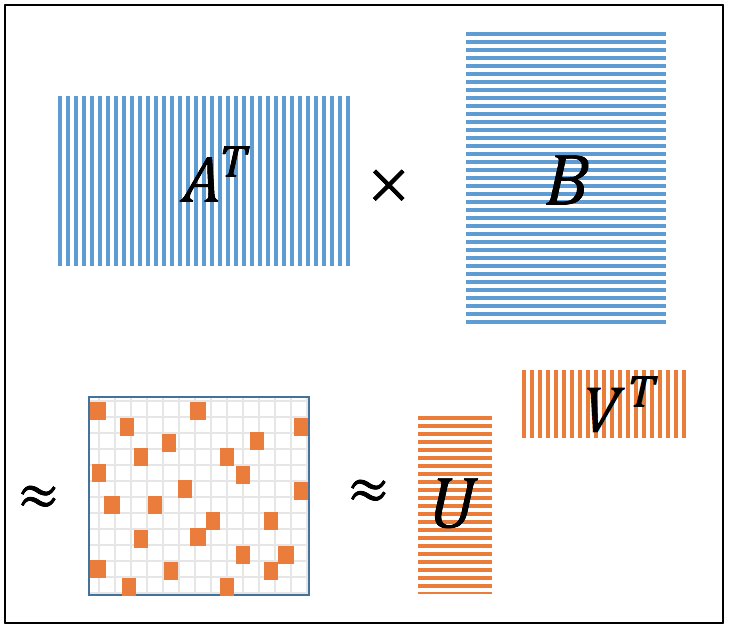

Shanshan Wu
|
I am a PhD student in the WNCG at the University of Texas at Austin. I am fortunate to have Alex Dimakis and Sujay Sanghavi as my advisors. I got my BS degree in 2011 and MS degree in 2014 from Shanghai Jiao Tong University, advised by Prof. Xudong Wang. My research interests include both theory and practice. For the theory part, I am interested in large-scale data analysis, linear algebra, optimization, and submodular function. For the practice part, I am interested in design and analysis of machine learning algorithms in distributed or parallel systems. I am currently using Apache Spark as my experimental platform. Here is my Email and CV. |
Current Project
|  |
We implement a randomized low-rank approximation algorithm in Spark. We also modify the original two-pass algorithm into a one-pass algorithm for direct low-rank approximation of matrix product. We prove a new spectral norm guarantee for the one-pass algorithm. |
Publications
Sparse and Greedy: Sparsifying Submodular Facility Location Problems
Erik Lindgren, Shanshan Wu, and Alex Dimakis
NIPS workshop OPT2015.
Distributed Opportunistic Scheduling with QoS Constraints for Wireless Networks with Hybrid Links
Wenguang Mao, Xudong Wang, and Shanshan Wu
IEEE Transactions on Vehicular Technology, 2015.
An earlier version appears in Proceedings of the IEEE Globecom, 2013.
Performance Study on a CSMA/CA-Based MAC Protocol for Multi-User MIMO Wireless LANs
Shanshan Wu, Wenguang Mao, and Xudong Wang
IEEE Transactions on Wireless Communications, 2014.
An earlier version appears in Proceedings of the IEEE Globecom, 2013.
Information-theoretic study on routing path selection in two-way relay networks
Shanshan Wu, Wenguang Mao, and Xudong Wang
Proceedings of the IEEE Globecom, 2013.
Graduate Courses
- At UT-Austin: Data Mining (EE380L), Large-Scale Optimization (EE381V), Probability and Stochastic Processes (EE381J), Advanced Algorithms (EE381V), Information Theory (EE381K), Algorithms: Techniques/Theory (CS388G), Advanced Probability in Learning, Inference, and Networks (EE381V).
- At SJTU: Linear Systems, Wireless Communication Theory, Computer Networks, Complex Networks, Random Process, Introduction to Coding and Information Theory.
- At edX online: Scalable Machine Learning (CS190.1x), Introduction to Big Data with Apache Spark (CS100.1x).